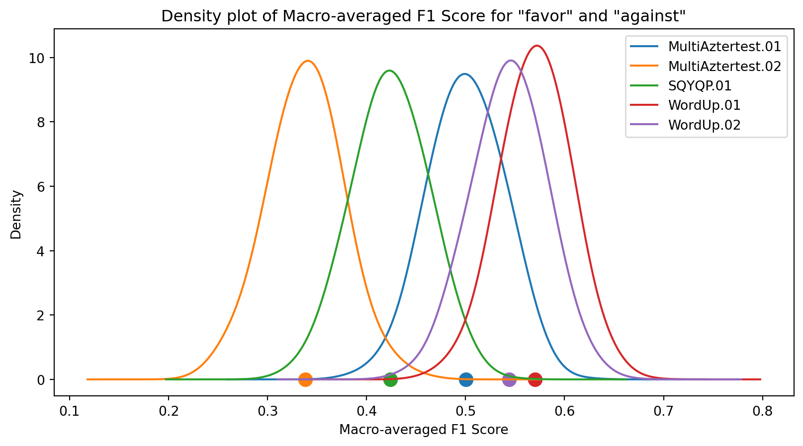

Performance metrics selected by the competition organizers
A test dataset of fixed size ( \(n\) )
The evaluation is based on the participants’ predictions
The Reference (Gold Standard) is known just for the organizers
A limited number of submissions per participant
A case study
The VaxxStance 2021 challenge aims to determine the stance expressed on the highly controversial topic of the anti-vaxxers movement in two languages: Basque and Spanish. The primary objective is identifying whether a given tweet conveys an against, favor, or neutral (none) stance regarding this predefined topic.
Table 1: Results for VaxxStance Close track - contextual (2021).
Obs
Gold Standard
WordUp.01
…
SQYQP.01
1
favor
favor
…
favor
2
favor
favor
…
none
3
against
none
…
against
4
none
none
…
none
…
…
…
…
…
\(n_{test}\)
none
favor
…
against
Leaderboard
Table 2: Macro-averaged F1 Scores for “favor” and “against” in the VaxxStance Close Track (2021) - Contextual Evaluation.
System
Basque
WordUp.01
0.5734
WordUp.02
0.5465
MultiAztertest.01
0.5024
SQYQP.01
0.4256
MultiAztertest.02
0.3428
Objectives
General Objective
Develop a robust statistical evaluation scheme for learning algorithms in challenges, offering validated tools for informed decision-making.
Specific Objectives
Review evaluation elements (metrics, statistical methods, configurations) to identify best practices and limitations.
Analyze key ML competitions to assess validation processes, transparency, and fairness.
Design advanced statistical evaluation schemes, validate through simulations or collaborations, and provide implementation guidelines.
Related Work
Related work
Table 3: List of key articles reviewed, including their authors and titles, providing foundational insights into statistical tests and evaluation methods in machine learning.
Author(s)
Title
Dietterich, T.G. (1998)
“Approximate Statistical Tests for Comparing Supervised Classification Learning Algorithms”
Demšar, J. (2006)
“Statistical Comparisons of Classifiers over Multiple Data Sets”
García y Herrera (2008)
“An Extension on Statistical Comparisons of Classifiers over Multiple Data Sets”
Lacoste et al. (2012)
“Bayesian Comparison of Machine Learning Algorithms on Single and Multiple Datasets”
Raschka, S. (2020)
“Model Evaluation, Model Selection, and Algorithm Selection in Machine Learning”
Comparison of methods and tests used in ML evaluation frameworks
Table 4: Comparison of methods and tests used in machine learning evaluation frameworks, highlighting their requirements and characteristics, including whether they require only predictions, allow multiple comparisons, use a single dataset, or rely on the competition’s provided metric.
Author
Method or Test
Requires only predictions, not the algorithm
Allows multiple comparisons
Uses a single dataset
Uses the competition’s given metric
Dietterich, T.G.
McNemar
X
O
X
O
Dietterich, T.G.
A test for the difference of two proportions
X
O
X
O
Dietterich, T.G.
Resampled Paired t-test
O
O
X
O
Dietterich, T.G.
k-fold cv Paired t test
O
O
X
O
Dietterich, T.G.
5x2cv t-test
O
O
X
O
Demšar, J.
Paired t-test
O
O
O
X
Demšar, J.
Wilcoxon signed ranked test
O
O
O
X
Demšar, J.
Counts of wins, losses and ties: signed test
O
O
O
X
Demšar, J.
ANOVA
O
X
O
X
Demšar, J.
Friedman test
O
X
O
X
Demšar, J.
post-hoc test
O
X
O
X
García & Herrera
Nemenyi
O
X
O
X
García & Herrera
Holm
O
X
O
X
García & Herrera
Hochberg
O
X
O
X
Lacoste et al.
Bayesian Comparison
O
X
O
X
Lacoste et al.
MCMC
O
X
O
X
Raschka, S.
5x2cv
O
O
X
O
Raschka, S.
McNemar
X
O
X
O
Raschka, S.
F-test
O
X
X
O
Theory framework
Bootstrapping
In statistics refers to drawing conclusions about a statistics’ sampling distribution by resampling the sample with replacement data as though it were a population with a fixed size, see Figure 2
Figure 2: Bootstrapping
y
MultiAztertest.01
MultiAztertest.02
SQYQP.01
WordUp.01
WordUp.02
0
AGAINST
AGAINST
AGAINST
AGAINST
FAVOR
FAVOR
1
AGAINST
FAVOR
AGAINST
AGAINST
FAVOR
FAVOR
2
AGAINST
FAVOR
NONE
FAVOR
AGAINST
AGAINST
3
FAVOR
FAVOR
FAVOR
AGAINST
FAVOR
FAVOR
4
FAVOR
FAVOR
NONE
AGAINST
FAVOR
FAVOR
Top 5 entries from the ‘Results for VaxxStance Close Track - Contextual (2021)’.
MultiAztertest.01
MultiAztertest.02
SQYQP.01
WordUp.01
WordUp.02
0
0.49025
0.308788
0.482413
0.617927
0.550909
1
0.524976
0.263587
0.473899
0.581218
0.622033
2
0.535814
0.366176
0.50666
0.593348
0.592989
3
0.508311
0.313008
0.508253
0.565969
0.53524
4
0.552128
0.353765
0.431905
0.59568
0.557417
Top 5 entries from the ‘Results for VaxxStance Close Track - Contextual (2021)’ using Macro-averaged F1 Score for ‘favor’ and ‘against’.

Figure 3
Performace Comparison in Challenge Scheme
Comparison of Classifiers
Table 5 provides the ordered confidence interval estimates obtained through bootstrapping, while Figure 4 displays these estimates in a plot.
Table 5: Results for VaxxStance Close Track - Contextual (2021) for Basque and Spanish
LCI
Score
UCI
LCI
Score
UCI
Basque
Spanish
WordUp.01
0.5031
0.5716
0.6401
WordUp.02
0.7734
0.8086
0.8437
WordUp.02
0.4751
0.5444
0.6138
WordUp.01
0.7537
0.7899
0.8261
MultiAztertest.01
0.4287
0.5007
0.5726
MultiAztertest.01
0.6987
0.7400
0.7814
SQYQP.01
0.3497
0.4237
0.4976
SQYQP.01
0.6310
0.6730
0.7149
MultiAztertest.02
0.2664
0.3402
0.4139
MultiAztertest.02
0.5945
0.6391
0.6837
Figure 4: Independent Samples
Difference against winner
Table 6 provides the confidence intervals comparing the top team with lower-ranking teams, while Figure 5 displays these intervals in a plot.
Table 6: Results for VaxxStance Close Track - Contextual (2021) for Basque and Spanish. Tha table contains IC of the difference between the top team and the other teams, for Basque (WordUp.01) and Spanish (WordUp.02)
Basque (WordUp.01)
LCI
Diff
UCI
Spanish (WordUp.02)
LCI
Diff
UCI
WordUp.02
-0.0371
0.0269
0.0910
WordUp.01
-0.0120
0.0184
0.0488
MultiAztertest.01
-0.0152
0.0713
0.1578
MultiAztertest.01
0.0211
0.0680
0.1149
SQYQP.01
0.0543
0.1485
0.2427
SQYQP.01
0.0877
0.1351
0.1825
MultiAztertest.02
0.1405
0.2314
0.3222
MultiAztertest.02
0.1165
0.1687
0.2210
Figure 5: Paired Samples
Statistical Hypothesis Testing
Given the test dataset \(x=x_1, \ldots , x_n\), in which \(A\) beats \(B\) by a magnitude \(\delta(x)=\theta_A (x) - \theta_B (x)>0\)\[H_0:\theta_A \leq \theta_B;\;\;H_1:\theta_A > \theta_B\]
As shown in Berg-Kirkpatrick (2012) , the \(p\)-value\((x)\) can be estimated by computing the fraction of times that this difference is greater than \(2\delta(x)\).
Table 7: Macro-averaged F1 Scores for “favor” and “against” in the VaxxStance Close Track (2021) - Contextual Evaluation.
System
Basque
WordUp.01
0.5734
WordUp.02
0.5465
MultiAztertest.01
0.5024
SQYQP.01
0.4256
MultiAztertest.02
0.3428
Figure 6: histogram of differences
Table 8: Differences of F₁ score for Basque
WordUp.01
WordUp.02
MultiAztertest.01
SQYQP.01
WordUp.02
0.027
MultiAztertest.01
0.071 †
0.044
SQYQP.01
0.148 ***
0.121 **
0.077 *
MultiAztertest.02
0.231 ***
0.204 ***
0.160 ***
0.083 *
Multiple Testing
Risk of Multiple Testing
Multiple hypothesis testing increases the risk of Type I errors—the false rejection of a true null hypothesis.
Correction Methods
Bonferroni correction: Divides the significance level by the number of comparisons.
Table 10: Metrics used for competitions Comparison.
Name
Description
\(n\)
Test data size
\(m\)
Number of participants or runs
Ties w/ win
Number of ties with the winner (corrections: none/Bonferroni/Holm/BH)
Poss. compars.
Total possible comparisons (\(m \times (m-1)/2\))
none/Bonf./Holm/BH
Number of ties between competitors with corrections with Adjusted p-value (corrections: none/Bonferroni/Holm/BH)
\(|win.-med|\)
Performance difference between the winner and the competitor in the middle of the table
CV
Coefficient of variation of competitors’ performance. \((CV=100\times \frac{s_x}{\overline{x}}\), where \(\overline{x}\) is the mean of \(x\) and \(s_x\) is the standard deviation of \(x)\)
PPI
Possible Percentage Improvement, e.g., for F1 score, it’s calculated as \(100\times(1-F_1^{winner})\)
Analysis of NLP Competitions
Table 11: Table Metrics and data considered across various competitions
Competition
Subtask / Language
Metric Used
Data Considered
MEX-A3T 2019
Author Profiling (Spanish, text and images)
Macro-averaged F1 Score
All participants
Aggressiveness Detection (Spanish)
F1 Score
All participants
TASS 2020
General Polarity (Spanish)
Macro-averaged F1 Score
All participants (Best Runs)
VaxxStance 2021
Stance Detection (Basque, Spanish)
Macro-averaged F1 Score for “favor” and “against”
All participants
EXIST 2021
Sexism Identification (English, Spanish)
Accuracy
Top 10 for each language (Best Runs)
Sexism Categorization (English, Spanish)
Macro-averaged F1 Score
Top 10 for each language (Best Runs)
DETOXIS 2021
Toxicity Detection (Spanish)
F1 Score
All participants (Best Runs)
MeOffendEs 2021
Offensive Language Identification (Mexican Spanish)
Table 12: Summary of competitions, subtasks, languages, ranking metrics, and participant details for key Natural Language Processing challenges.
Challenge
DETOXIS 2021
PAR-MEX 2022
MeOffendEs 2021
MEX-A3T 2019 (Agg)
MEX-A3T 2019 (author profiling)
Task
Toxicity detection
Paraphrase Identification
Non-contextual
Aggressiveness Detection
Author Profiling
Metric
F1 score
F1 score
F1 score
F1 score
Macro-averaged F1 score
\(n\)
891
2821
2182
3156
1500
\(m\)
31
8
10
25
4
Ties w/ win.
0/3/0/0
1/1/1/1
1/2/2/1
3/7/4/3
1/1/1/1
Poss. compars.
465
28
45
300
6
none/Bonf.
80/135
6/6
7/9
70/91
2/2
Holm/BH
112/85
6/6
8/7
80/63
2/2
\(|win.-med|\)
0.223
0.061
0.078
0.098
0.164
\(CV\)
42.600
4.722
16.070
19.620
46.491
PPI
35.390
5.758
28.46
52.038
42.581
Metric Macro-averaged F1 score (FAVOR, AGAINST).
Table 13: Comparison of performance metrics and statistical outcomes for the Close Track (Textual and Contextual) in Spanish and Basque, including number of participants (\(m\)), ties, and key statistical measures (\(|win.-med|\), \(CV\), and PPI).
for metric, diffs in diff['winner'].items():print(f"\nFor the metric {metric} the best is {diffs['best']}")for key, value in diffs['p_value'].items():print(f"p-value for the difference with {key}{value}")
For the metric f1_score_average=macro the best is NLP-CIC-TAGE
p-value for the difference with UC3M-DEEPNLP 0.0
p-value for the difference with Abu 0.0
p-value for the difference with baseline 0.0
p-value for the difference with FRSCIC 0.0
p-value for the difference with Tü Par 0.236
p-value for the difference with Thang CIC 0.0
p-value for the difference with temu_bsc 0.0
For the metric accuracy_score the best is NLP-CIC-TAGE
p-value for the difference with UC3M-DEEPNLP 0.0
p-value for the difference with Abu 0.0
p-value for the difference with baseline 0.0
p-value for the difference with FRSCIC 0.0
p-value for the difference with Tü Par 0.226
p-value for the difference with Thang CIC 0.0
p-value for the difference with temu_bsc 0.0
For the metric precision_score the best is NLP-CIC-TAGE
p-value for the difference with UC3M-DEEPNLP 0.004
p-value for the difference with Abu 0.0
p-value for the difference with baseline 0.0
p-value for the difference with FRSCIC 0.002
p-value for the difference with Tü Par 0.0
p-value for the difference with Thang CIC 0.0
p-value for the difference with temu_bsc 0.0
For the metric recall_score the best is baseline
p-value for the difference with UC3M-DEEPNLP 0.0
p-value for the difference with Abu 0.0
p-value for the difference with NLP-CIC-TAGE 0.0
p-value for the difference with FRSCIC 0.0
p-value for the difference with Tü Par 0.0
p-value for the difference with Thang CIC 0.0
p-value for the difference with temu_bsc 0.09
Bonferroni Correction
correction ='bonferroni'for metric, diffs in diff['winner'].items():print(f"\nFor the metric {metric} the best is {diffs['best']}") result = multipletests(list(diffs['p_value'].values()), method=correction) p_valuesC =dict(zip(diffs['p_value'].keys(),result[1])) for key, value in p_valuesC.items():print(f'{key}, p-value corrected by {correction} = {value}')
For the metric f1_score_average=macro the best is NLP-CIC-TAGE
UC3M-DEEPNLP, p-value corrected by bonferroni = 0.0
Abu, p-value corrected by bonferroni = 0.0
baseline, p-value corrected by bonferroni = 0.0
FRSCIC, p-value corrected by bonferroni = 0.0
Tü Par, p-value corrected by bonferroni = 1.0
Thang CIC, p-value corrected by bonferroni = 0.0
temu_bsc, p-value corrected by bonferroni = 0.0
For the metric accuracy_score the best is NLP-CIC-TAGE
UC3M-DEEPNLP, p-value corrected by bonferroni = 0.0
Abu, p-value corrected by bonferroni = 0.0
baseline, p-value corrected by bonferroni = 0.0
FRSCIC, p-value corrected by bonferroni = 0.0
Tü Par, p-value corrected by bonferroni = 1.0
Thang CIC, p-value corrected by bonferroni = 0.0
temu_bsc, p-value corrected by bonferroni = 0.0
For the metric precision_score the best is NLP-CIC-TAGE
UC3M-DEEPNLP, p-value corrected by bonferroni = 0.028
Abu, p-value corrected by bonferroni = 0.0
baseline, p-value corrected by bonferroni = 0.0
FRSCIC, p-value corrected by bonferroni = 0.014
Tü Par, p-value corrected by bonferroni = 0.0
Thang CIC, p-value corrected by bonferroni = 0.0
temu_bsc, p-value corrected by bonferroni = 0.0
For the metric recall_score the best is baseline
UC3M-DEEPNLP, p-value corrected by bonferroni = 0.0
Abu, p-value corrected by bonferroni = 0.0
NLP-CIC-TAGE, p-value corrected by bonferroni = 0.0
FRSCIC, p-value corrected by bonferroni = 0.0
Tü Par, p-value corrected by bonferroni = 0.0
Thang CIC, p-value corrected by bonferroni = 0.0
temu_bsc, p-value corrected by bonferroni = 0.63
To propose a methodology that allows the analysis of performance in competitions, designed to complement the standard process of winner selection.
To evaluate the degree of competitiveness among these challenges, considering their potential for improvement in future iterations.
Discussion and Conclusions
Summary of Research
General Objective
Develop a robust statistical evaluation scheme for learning algorithms in challenges, offering validated tools for informed decision-making.
Specific Objectives
Review evaluation elements (metrics, statistical methods, configurations) to identify best practices and limitations.
Analyze key ML competitions to assess validation processes, transparency, and fairness.
Design advanced statistical evaluation schemes, validate through simulations or collaborations, and provide implementation guidelines.
Contributions to Knowledge
Key Findings:
Non-parametric Statistics are suitable for evaluating classification algorithms.
Introduced tools for fair competition result comparison.
Developed a structured evaluation framework for competitions.
Theoretical:
Formalization of competition-based algorithm evaluation.
Expanded understanding of statistical tests and competition comparison.
Practical:
Toolkit for statistical evaluation.
Actionable feedback for participants in algorithmic competitions.
Limitations:
Data availability and external validity.
Focus on classification competitions.
Acknowledgments
I extend my deepest gratitude to my Ph.D. advisor, Ph.D. Mario Graff Guerrero, for his unwavering guidance, insightful advice, and continuous support throughout my research journey.
Special thanks to Ph.D. Hugo Jair Escalante for his significant contributions to the development and writing of the papers. His leadership and recognition in the field were crucial in securing the datasets from the analyzed competitions, enabling the successful validation of the proposed methodologies.
We sincerely thank the organizers of the competitions analyzed in this work. Their provision of the datasets was instrumental in enabling the validation and testing of the proposed framework. These datasets formed the foundation for rigorous analysis and evaluation, making it possible to demonstrate the effectiveness of our methodologies. We appreciate their support and commitment to advancing research by creating valuable resources.